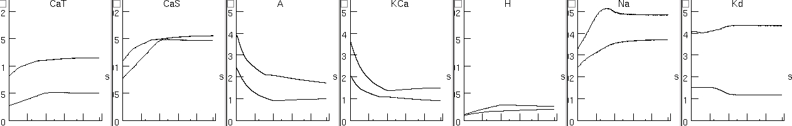

This is the readme for Tom Morse's implementation in NEURON of the
model from
Liu Z, Golowasch J, Marder E, Abbott LF (1998)
A model neuron with activity-dependent conductances regulated by
multiple calcium sensors. J Neurosci 18:2309-20
Abstract:
Membrane channels are subject to a wide variety of regulatory
mechanisms that can be affected by activity. We present a model of a
stomatogastric ganglion (STG) neuron in which several Ca2+-dependent
pathways are used to regulate the maximal conductances of membrane
currents in an activity-dependent manner. Unlike previous models of
this type, the regulation and modification of maximal conductances by
electrical activity is unconstrained. The model has seven
voltage-dependent membrane currents and uses three Ca2+ sensors acting
on different time scales. Starting from random initial conditions over
a given range, the model sets the maximal conductances for its active
membrane currents to values that produce a predefined target pattern
of activity approximately 90% of the time. In these models, the same
pattern of electrical activity can be produced by a range of maximal
conductances, and this range is compared with voltage-clamp data from
the lateral pyloric neuron of the STG. If the electrical activity of
the model neuron is perturbed, the maximal conductances adjust to
restore the original pattern of activity. When the perturbation is
removed, the activity pattern is again restored after a transient
adjustment period, but the conductances may not return to their
initial values. The model suggests that neurons may regulate their
conductances to maintain fixed patterns of electrical activity, rather
than fixed maximal conductances, and that the regulation process
requires feedback systems capable of reacting to changes of electrical
activity on a number of different time scales.
----------------------------------------------------------------------
Model Usage:
How to run the model:
Autolaunch from ModelDB and select figures by pressing buttons or
download and expand the archive. Then on
mswin: double click on the mosinit.hoc file after compiling the mod
files with mknrndll
unix: type "nrnivmodl" and enter and then "nrngui mosinit.hoc" in the
expanded archive folder.
mac: after the archive is unziped drag and drop the newly created
folder onto the mknrndll icon. Then drag and drop the mosinit.hoc
in the folder onto the nrngui icon.
----------------------------------------------------------------------
Notes on the recreation and verification of the model:
I recreated figure 3 because aspects of that allow for verification of
the complete model. In this figure there are two models named model A
and model B. These models evolve from starting conductances whose
values are shown on the left of each graph to ending conductances
whose values are shown on the right of each graph. For each of four
cases (start and end of model A and B) voltage trajectories are
graphed in the middle and top of figure 3. So first I verified the
underlying STG model (without activity) by plugging these values into
the model and found that it did reproduce the trajectories. Second I
verified the activity dependence by graphing the evolution of the
model conductances:

to see that they matched the bottom figure.
of the paper:

The simulation results matched the paper when run for 100 seconds
(shown above). The paper figure caption likely has a typo (Abbott,
personal communication 2007) when it mentions these runs were 15
seconds of simulation time.
See notes.txt for how to run model to examine long-term stability of
conductances.